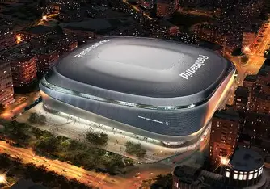

La historia del
Real Madrid
El Real Madrid es uno de los clubes más históricos y exitosos del fútbol mundial. Desde su fundación en 1902 ha conquistado títulos nacionales e internacionales y ha contado con jugadores legendarios que marcaron generaciones.

El Real Madrid es el club más laureado de la historia del fútbol.
A lo largo de más de un siglo ha conquistado títulos nacionales e internacionales
que lo convierten en una referencia mundial.
🏆 Champions League: 15
🏆 LaLiga: 36
🏆 Copa del Rey: 20
🏆 Supercopa de España: 13
🏆 Supercopa de Europa: 6
🏆 Mundial de Clubes: 8
🏆 Copa Intercontinental: 3
🏆 Copa UEFA: 2
🏆 Copa de la Liga: 1
🏆 Pequeña Copa del Mundo: 2
🏆 Copa Eva Duarte: 1
🏆 Copa Iberoamericana: 1
El Santiago Bernabéu ha sido escenario de noches históricas y de algunos de los mejores jugadores de todos los tiempos como Alfredo Di Stéfano, Cristiano Ronaldo, Zidane, Raúl o Sergio Ramos.